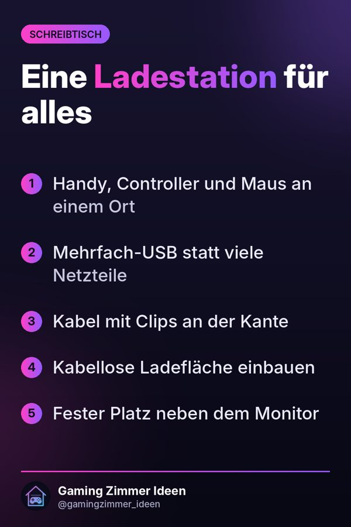

Ideen › Schreibtisch Organisation
Eine Ladestation für alles: so lädst du Handy, Controller und Maus ordentlich

Überall liegen Ladekabel herum? Richte eine Ladestation für alles ein: Handy, Controller und Maus an einem Ort, ein Mehrfach-USB-Netzteil statt vieler Stecker, Kabel mit Clips an der Tischkante, eine kabellose Ladefläche und ein fester Platz neben dem Monitor.
Auf einen Blick
- Handy, Controller und Maus an einem Ort
- Mehrfach-USB statt viele Netzteile
- Kabel mit Clips an der Kante
- Kabellose Ladefläche einbauen
- Fester Platz neben dem Monitor
Tipp: Kurze Kabel mit 30 oder 50 cm Länge reichen an einer Ladestation völlig und sehen viel ordentlicher aus.